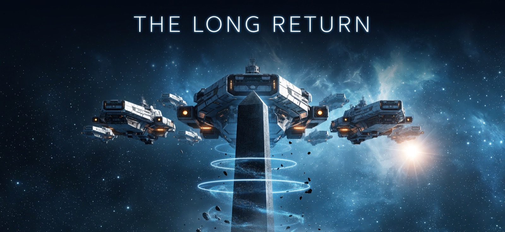
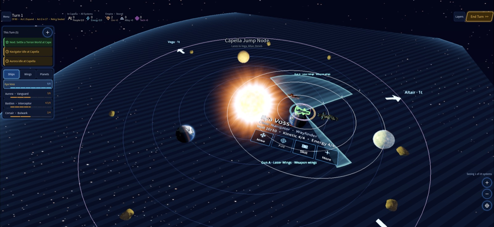

Build your empire
Settle complementary worlds, recover ship designs, balance people and energy, and keep your fleets supplied.
Capital fleets. One relic.
Build an interstellar economy, command six distinct capital classes, and win through positioning, logistics, and tactical firepower.
iPhone · iOS 16+ · Offline play
Settle complementary worlds, recover ship designs, balance people and energy, and keep your fleets supplied.
Combine all-round kinetic turrets, laser broadsides, long-range plasma bows, signature abilities, and planetary cover.
Win through the relic, eliminate rival Navigators, or lead on score when the final turn arrives.

Standard and Quick matches work offline against AI. Optional Game Center sign-in adds five achievements, High Score and Swift Victory leaderboards, plus 1v1 auto-match and friend invitations. There is no public chat, advertising, or in-app purchase.
For help, bug reports, or feedback, email chan.liu1983@gmail.com or use the public issue tracker. Include your iPhone model, iOS version, game version, and a description of what you expected and saw. Do not include passwords or private account details.
The title screen includes a guided How to Play tutorial. Matches save automatically; Continue resumes the current match.